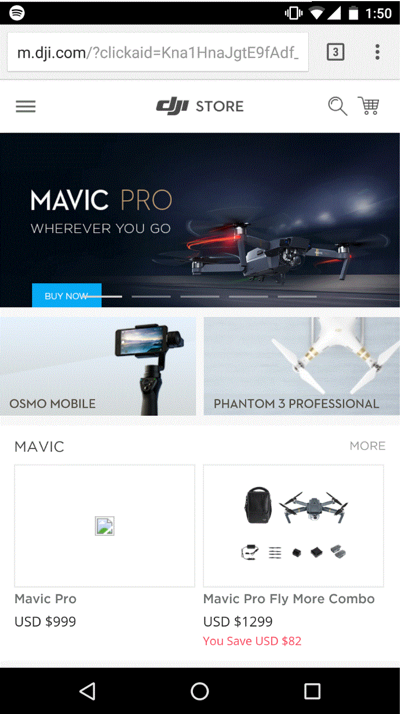
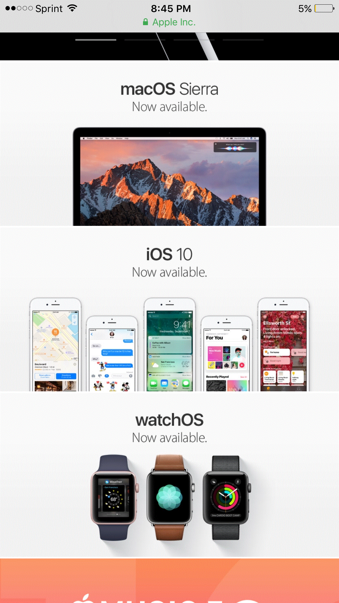

Proximity —
Alignment — Wyatt Larson
Dji.com
Dji.com did a very good job at making sure their website was properly aligned
(though they had a missing picture for their newest drone, the Mavic Pro).
They used a tile or block look to their webstore, each block featuring a unique
item or product group. They aligned it in a way that the banner on top dominates
the screen, then the smaller blocks underneath for additional information on
products. Everything is straight and uniform. The dji logo is in center alignment
of the page. All in all, they have a very properly and classically aligned website.
Repetition —
Contrast — Jossten Childs -->
Apple.com
I beleive that this website is an excellent example of how contrast con draw the
attention to the shape of a product. Apple products have commonsly been known
for their excellent form factor, and Apple's website plays on this by showing
outlines around all the phones and watches, effectively making them "pop."
I also think that the use of black text on a white background is an example of
intelligent design. This process darws the eye to the center of the iamge where
the text is, and effectively makes the text seem bigger and "more important"
Typography — Nicole Bunch
Amazon.com
This is a good example of Typography because there is consistency in the sans-serif fonts
but contrast is also created between different sizes and variation on bold and regular typeface.